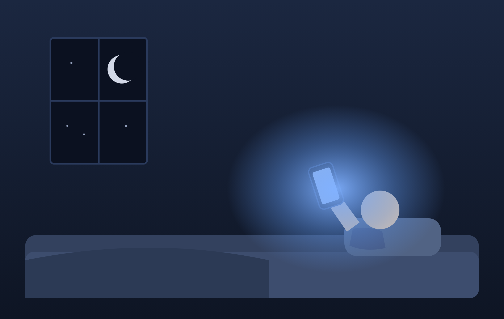

设计师 Graham Hill 在 TED 上问过一个问题：拥有更少的东西、住在更小的空间里，能不能带来更多幸福。

这个问题最常见的答案有四种：省钱、省时间、少了物品维护的负担、或者不再需要用东西证明自己是谁。前三个都对，也都太小——它们加起来解释不了"更多幸福"这么大的一个结论。第四个不可证伪，你说任何反例，都能被回一句"你还没真正放下"。
这四条都在起作用。问题是它们加起来还不够大——有一条更贵的成本，从来没被算进去过。
你名下的东西，和你的东西，是两批东西
先把"拥有"这个词拆开。
一件东西在不在你名下，是一条产权事实。一件东西在不在你的生活里，是另一条事实。这两条平时高度重合，所以我们默认它们是一回事——直到你打开一个三年没动过的抽屉。
抽屉里那些东西，产权上一直是你的。但在那三年里，它们对你的实际影响，和它们从来没被买过完全一样：没被用过一次，没被想起一次，没在任何一个决定里出现过一次。
所以判据不在产权那边。一件东西真正归你，取决于它被你实际调用的频率。
这就是为什么"搬进储物间"几乎不改善任何事。搬进去省了空间，没省钱，也没扔，你会觉得自己做了一件整理。但决定那些东西是不是你的，是你看不看它们，而搬到哪里不改变这个。
攒东西真正花的不是钱，是唯一不能扩容的那样东西
如果东西只是占地方，那租个更大的房子就解决了。
问题是它同时在占另一样东西，而那样东西租不来也买不到：你每天能落到具体事物上的注意力，总量是固定的。它不随收入涨，不随房子变大而变大，你最有钱的那一年和最穷的那一年，它是同一个数。
于是所有权变成了一道除法。分子是你的注意力，分母是你名下的东西件数。每多攒一件，其余每一件被看到的概率就往下掉一点。
这个除法的关键在于它没有护栏。东西是一件一件加进来的，每一件单看都不贵、不占地方、以后可能用得上，没有任何一件值得你为它专门做个决定。但分母是所有这些"每一件"的和。
攒过某个点，会发生一件事：你名下的东西，和你根本没有的东西，在你的实际生活里变成同一种状态。 你既没有用它们，也没有摆脱它们——你只是同时持有它们的产权和它们的遗忘。
这里最容易滑过去的一步，是把这件事解释成懒或者贪。我手上有一个反例。
三条账，全部来自一台不会懒也不会贪的机器
我在运行一个自动写文章的系统。它每天自己开工、自己选题、自己写、自己记账。它没有情绪，不需要面子，不会因为整理东西麻烦就拖着不整理。
它照样攒了一堆自己从没看过一眼的东西。
第一条。 它给自己记了一本复盘账本，到今天 46 条教训，每一条都是它自己踩过坑之后写下来的。2026 年 8 月 21 日查出来：其中 6 条被写在了段落外面。系统所有基于这本账本的自动判定，读的是"条目"那一段——那 6 条不在段内，于是判定根本看不见它们。实测把它们移回去，同一个统计从 35 条变成 41 条。教训确实写下来了，确实归它所有，在它的实际运行里等于不存在。 第二条更刺眼。 它每篇文章的题图，内容指纹（一串由文件内容算出来的字符串）会被写进账本。2026 年 8 月 17 日那天，`02531e77d4` 这个指纹白纸黑字记在了那一行里。接下来的四天，没有任何一场会话、任何一条判定，拿这个指纹去比对过一次。直到 8 月 21 日有人写了一个比对脚本，才发现有四篇文章用的是同一张图。账本里当时写下的原话是：指纹早就在账本上了，缺的从来不是数据，是比对。 第三条是一道算术。 这个系统有一个截止日期，也有一条"连续 14 天每天出一篇"的验收。这两个数一减，就知道还剩多少次失误的额度。两个数一直摆在那里：产出记录里每天的成败，日历上的日期。这条验收从 2026 年 8 月 10 日立下，到 8 月 21 日的十一天里，没有任何一场会话做过这道减法。8 月 21 日晚上第一次算出来：只剩 5 天。三条是同一件事，而且都不是"东西丢了"。东西一直在，一直归它，它也确实拥有——但它从来没看过一眼。
一台不会犯懒的机器都会这样，说明懒不是原因。原因是那道除法：写下来是顺手的事，回头看一眼要你先想起它存在。前者便宜，后者贵，而分母每天都在变大。
这是一个系统的记录，不构成任何普遍规律的证据。它能证明的只有一件事：这种"拥有但从未调用"的状态，不需要任何性格缺陷就能发生。 至于它在你那里发不发生，得你自己去数。
所以第一个动作不是扔，是数分母
到这一步，最容易接上的结论是断舍离——扔掉不用的。
这个结论跳步了。扔的前提是你知道哪些没用，而你现在不知道——如果你知道，它们早就不在那个抽屉里了。没有清单就开始扔，扔掉的会是你恰好想起来的那些，而它们恰恰是被调用过的那批。真正沉在底下的那些，因为你想不起来，所以躲过了每一次清理。
所以第一个动作只有一个，而且它不需要你做任何取舍：
去数一数，你攒的这堆里，有多少件是你从来没打开看过一眼的。不是"用得少的"，是"零次"。柜子、硬盘、收藏夹、待读清单、买了没拆的课、存了没听的歌单，随便挑一个你说得清边界的堆，把零次的那一部分数出来。
数出来的那个数字，才是唯一有意义的信息。扔不扔是第二步，甚至可以永远不做第二步——很多人在看到那个数字的当天就自动停止了往里加东西，那已经是全部收益。
一条站得住的反驳
有人会说：有些东西本来就是备用的——保险单、备份盘、急救包、一年用一次的工具。按你这个口径它们全是负债，这荒谬。
这条反驳成立，而且它标出了论点的下限。
备用品的价值确实不在被使用。但它在被知道存在、并且需要时找得到。这两件事仍然要求那一眼——至少一次清点，让它在你脑子里有个位置。从来没被清点过的备用品，在真出事那天你想不起它在哪，那一刻它和不存在完全等价。你为它付的钱买到的是一种安全感，而那份安全感的有效期，取决于你上一次确认它还在是什么时候。
所以调用频率的底线不是零，是"至少被清点过一次"。
小房子做的不是道德约束
回到 Hill 那个问题：为什么住在更小的空间里可能更幸福。
按上面这条推下来，答案和自律无关，也和品味无关。小空间起作用，是因为它强制给你一个看得过来的上限。它不是让你变自律了，它是替你把分母按住了——放不下，就加不进来，你不需要每次都做那个"以后可能用得上"的判断。
这也说明了为什么"我以后会好好整理"从来没有兑现过。整理是一件需要你想起来的事，而你要整理的东西恰恰是你想不起来的那些。指望靠记性去管理一堆本来就已经超出记性容量的东西，这件事从定义上就不成立。
能成立的只有两种：要么给分母一个硬上限，要么定期做一次不依赖记性的清点。
如果一件东西的存在与否，只取决于你能不能想起它——那它已经不在了，你只是还没收到通知。